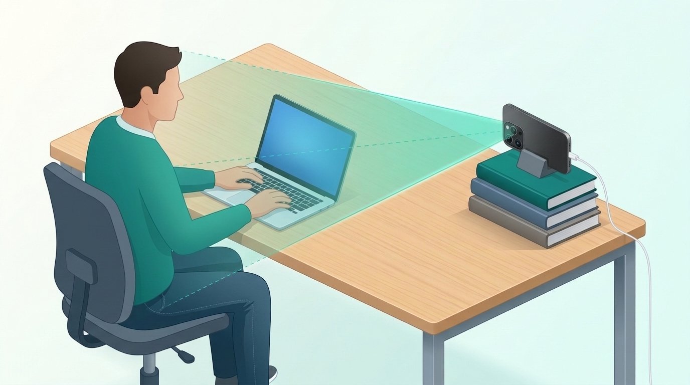

Side Camera Setup

Setup Instructions
- Plug in your charger and prop your phone on a stand, mug, or stacked books (landscape gives a wider view, portrait also works).
- Place it on your left or right desk side (~arm's length away) aimed toward you and your workspace.
- Check the live preview on your laptop so you and your laptop/keyboard are both visible, then hold steady for 3 seconds.
Turn on Do Not Disturb (DND)
Incoming phone calls or notifications will minimize your camera during the exam.
🍎 iPhone: Swipe down top-right ➔ tap Focus (Do Not Disturb)
🤖 Android: Swipe down top bar ➔ tap Do Not Disturb
🔒 Setup preview passes temporarily to your laptop only and is never stored. The examiner only receives snapshots if a violation occurs.
Tap Start to allow camera & motion access.
Motion sensors unavailable or blocked in your browser.
Laptop not recognized from this side angle? If your desk and laptop are clearly visible in the laptop preview, you can confirm below (a desk baseline photo will be sent to your examiner).
Connecting…